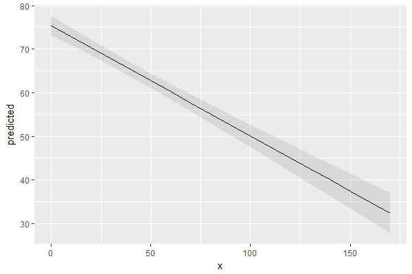
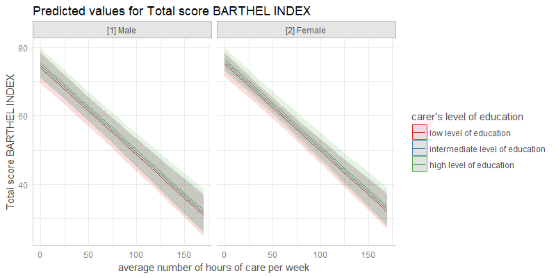

Why marginal effects?
Results of regression models are typically presented as tables that are easy to understand. For more complex models that include interaction or quadratic / spline terms, tables with numbers are less helpful and difficult to interpret. In such cases, marginal effects are far easier to understand. In particular, the visualization of marginal effects allows to intuitively get the idea of how predictors and outcome are associated, even for complex models.
Aim of this package
ggeffects computes marginal effects at the mean or at representative values (see definitions here) from statistical models and returns the result as tidy data frames. These data frames are ready to use with the ggplot2-package.
Documentation and Support
Please visit https://strengejacke.github.io/ggeffects/ for documentation and vignettes. In case you want to file an issue or contribute in another way to the package, please follow this guide. For questions about the functionality, you may either contact me via email or also file an issue.
ggeffects supports many different models and is easy to use
Marginal effects can be calculated for many different models. Currently supported model-objects are: betabin, betareg, bglmer, blmer, brglm, brmsfit, clm, clm2, clmm, coxph, gam (package mgcv), Gam (package gam), gamlss, gamm, gamm4, gee, geeglm, glm, glm.nb, glmer, glmer.nb, glmmTMB, glmmPQL, glmrob, glmRob, gls, hurdle, ivreg, lm, lm_robust, lme, lmer, lmrob, lmRob, logistf, lrm, MixMod, MCMCglmm, multinom, negbin, nlmer, ols, plm, polr, rlm, rlmer, rq, rqss, stanreg, survreg, svyglm, svyglm.nb, tobit, truncreg, vgam, wbm, zeroinfl and zerotrunc. Other models not listed here are passed to a generic predict-function and might work as well, or maybe with ggeffect() or ggemmeans(), which effectively do the same as ggpredict().
Interaction terms, splines and polynomial terms are also supported. The main functions are ggpredict(), ggemmeans() and ggeffect(). There is a generic plot()-method to plot the results using ggplot2.
Examples
The returned data frames always have the same, consistent structure and column names, so it’s easy to create ggplot-plots without the need to re-write the function call. x and predicted are the values for the x- and y-axis. conf.low and conf.high could be used as ymin and ymax aesthetics for ribbons to add confidence bands to the plot. group can be used as grouping-aesthetics, or for faceting.
ggpredict() requires at least one, but not more than four terms specified in the terms-argument. Predicted values of the response, along the values of the first term are calculated, optionally grouped by the other terms specified in terms.
data(efc)
fit <- lm(barthtot ~ c12hour + neg_c_7 + c161sex + c172code, data = efc)
ggpredict(fit, terms = "c12hour")
#>
#> # Predicted values of Total score BARTHEL INDEX
#> # x = average number of hours of care per week
#>
#> x predicted std.error conf.low conf.high
#> 0 75.444 1.116 73.257 77.630
#> 15 71.644 0.965 69.753 73.535
#> 35 66.578 0.851 64.911 68.245
#> 50 62.779 0.852 61.108 64.449
#> 70 57.713 0.970 55.811 59.614
#> 85 53.913 1.122 51.713 56.113
#> 100 50.113 1.309 47.547 52.680
#> 120 45.047 1.591 41.929 48.166
#> 135 41.248 1.817 37.686 44.810
#> 170 32.382 2.373 27.732 37.033
#>
#> Adjusted for:
#> * neg_c_7 = 11.84
#> * c161sex = 1.76
#> * c172code = 1.97A possible call to ggplot could look like this:
library(ggplot2)
mydf <- ggpredict(fit, terms = "c12hour")
ggplot(mydf, aes(x, predicted)) +
geom_line() +
geom_ribbon(aes(ymin = conf.low, ymax = conf.high), alpha = .1)
However, there is also a plot()-method. This method uses convenient defaults, to easily create the most suitable plot for the marginal effects.
mydf <- ggpredict(fit, terms = "c12hour")
plot(mydf)
ggeffects has a plot()-method with some convenient defaults, which allows quickly creating ggplot-objects.
With three variables, predictions can be grouped and faceted.
ggpredict(fit, terms = c("c12hour", "c172code", "c161sex"))
#>
#> # Predicted values of Total score BARTHEL INDEX
#> # x = average number of hours of care per week
#>
#> # low level of education
#> # [1] Male
#> x predicted std.error conf.low conf.high
#> 0 73.954 2.347 69.354 78.554
#> 45 62.556 2.208 58.228 66.883
#> 85 52.424 2.310 47.896 56.951
#> 170 30.893 3.085 24.847 36.939
#>
#> # low level of education
#> # [2] Female
#> x predicted std.error conf.low conf.high
#> 0 74.996 1.831 71.406 78.585
#> 45 63.597 1.603 60.456 66.738
#> 85 53.465 1.702 50.130 56.800
#> 170 31.934 2.606 26.827 37.042
#>
#> # intermediate level of education
#> # [1] Male
#> x predicted std.error conf.low conf.high
#> 0 74.673 1.845 71.055 78.290
#> 45 63.274 1.730 59.883 66.665
#> 85 53.142 1.911 49.397 56.887
#> 170 31.611 2.872 25.982 37.241
#>
#> # intermediate level of education
#> # [2] Female
#> x predicted std.error conf.low conf.high
#> 0 75.714 1.225 73.313 78.115
#> 45 64.315 0.968 62.418 66.213
#> 85 54.183 1.209 51.815 56.552
#> 170 32.653 2.403 27.943 37.362
#>
#> # high level of education
#> # [1] Male
#> x predicted std.error conf.low conf.high
#> 0 75.391 2.220 71.040 79.741
#> 45 63.992 2.176 59.727 68.258
#> 85 53.860 2.364 49.226 58.494
#> 170 32.330 3.257 25.946 38.713
#>
#> # high level of education
#> # [2] Female
#> x predicted std.error conf.low conf.high
#> 0 76.432 1.809 72.887 79.977
#> 45 65.034 1.712 61.679 68.388
#> 85 54.902 1.910 51.158 58.646
#> 170 33.371 2.895 27.697 39.045
#>
#> Adjusted for:
#> * neg_c_7 = 11.84
mydf <- ggpredict(fit, terms = c("c12hour", "c172code", "c161sex"))
ggplot(mydf, aes(x = x, y = predicted, colour = group)) +
stat_smooth(method = "lm", se = FALSE) +
facet_wrap(~facet)
plot() works for this case, as well:
plot(mydf)
There are some more features, which are explained in more detail in the package-vignette.
Contributing to the package
Please follow this guide if you like to contribute to this package.
Installation
Latest development build
To install the latest development snapshot (see latest changes below), type following commands into the R console:
Please note the package dependencies when installing from GitHub. The GitHub version of this package may depend on latest GitHub versions of my other packages, so you may need to install those first, if you encounter any problems. Here’s the order for installing packages from GitHub:
sjlabelled → sjmisc → sjstats → ggeffects → sjPlot
Citation
In case you want / have to cite my package, please use citation('ggeffects') for citation information.